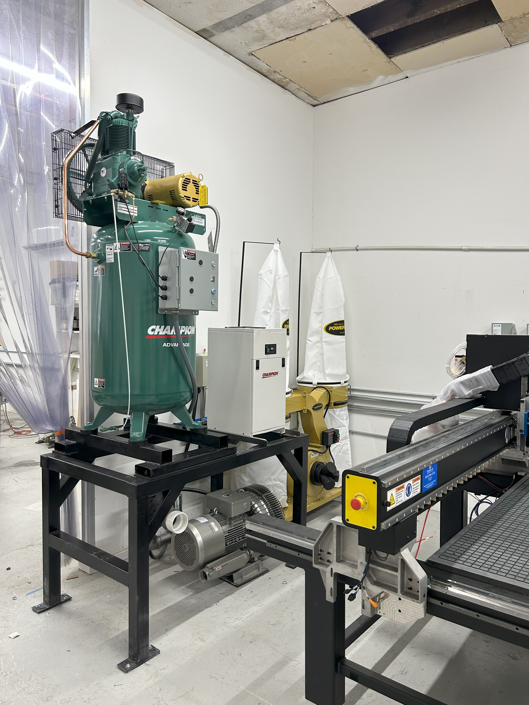
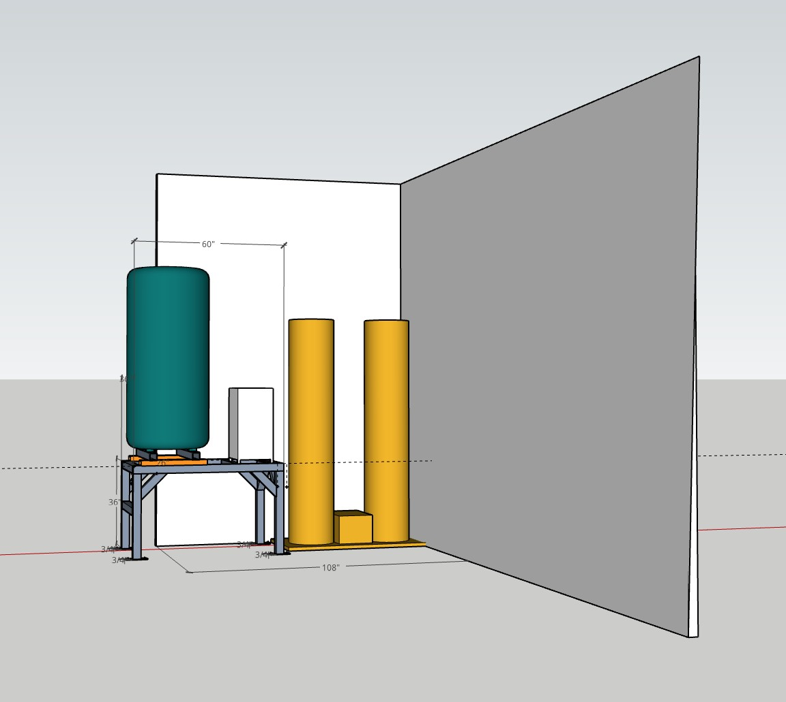

Full install of auxilliary equipment for a small shop's new CNC. Space was tight in this location, so I custom fabricated this steel frame that holds the air compressor and air drying unit. Below you will find the vacuum pump for the CNC bed, and on the right side is the dust collector. I ran all pneumatic lines, and ducting for this installation.

Here is a basic 3D model I made of the space. The general dimensions of the equipment, space, and frame did not require a model, but I wanted to mount the air compressor to a steel skid that would allow a forklift to easily move the air compressor for future transport, and because the ceiling height in the space made hoisting the compressor with a choke impossible. Determining the layout for the mounting holes, and how all the components would interact was much easier with this 3D model.
